Figure 15 · One internal component, one input-space image
把网络里的一个数和一张输入位置图配起来。上面是内部响应的变化量，下面说明这次变化来自输入的哪几个位置。四张图始终用同一套位置坐标。这张采用可手算的线性示例，不是 ViT 实测结果。
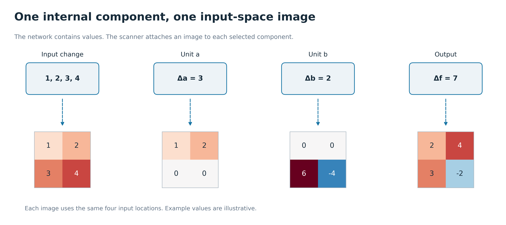
把网络里的一个数和一张输入位置图配起来。上面是内部响应的变化量，下面说明这次变化来自输入的哪几个位置。四张图始终用同一套位置坐标。这张采用可手算的线性示例，不是 ViT 实测结果。

先用原图减去参考图，得到这次需要解释的输入变化。然后拆成四张小图，每张只保留一个位置，其余位置为零；四张相加正好恢复输入差值。真实 RGB 输入对应每个像素的三个通道。实现用自动微分计算这些位置的贡献，不必真的存下十几万张稀疏图。
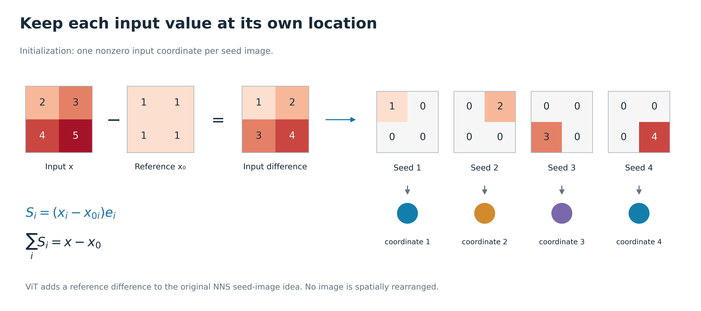
沿用上一图的输入差值。单元 a 的图是 [1,2;0,0]，单元 b 的图是 [0,0;6,-4]。输出用 2a+0.5b，因此输出图是 [2,4;3,-2]，总和为 7。你可以看见数值被重新加权，但原来的位置始终没丢。ViT 的系数还随输入变化，所以实际方法要沿参考到原图的路径累计。
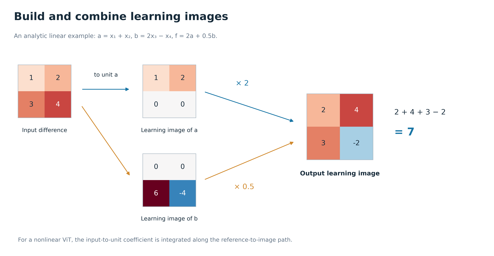
Patch embedding 可以先按线性连接理解；位置编码和偏置仍保留在模型里。到了 attention，输入既会改变注意力权重 A，也会改变 Value，完整方法需要两部分导数。最后 residual 旁路也要算，才能把贡献账算完整。旧的固定 attention 图只研究其中一个条件视角。
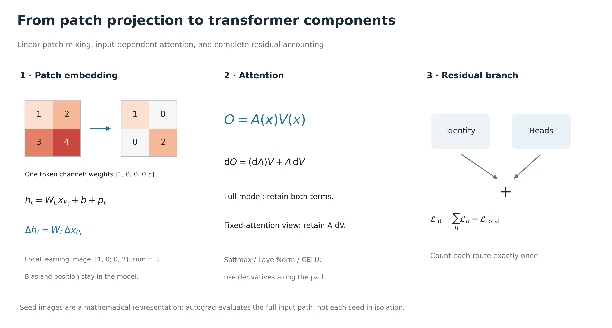
这张对应原论文 Figure 13 的上下对照读法。上面两行是同一类别目标的 attention 分支 learning image：正贡献和负贡献分开看；下面是同一分支输出在各个 token 上的响应强度。前者回答“输入哪里贡献了多少”，后者回答“内部哪个 token 的向量较大”。它们使用不同坐标，不能要求长得一样。每列换一个 block，始终保持同一张输入和同一个类别目标。

固定同一输入和最终类别，比较不同 head 分到的输入贡献。每个小图是一个 head 的成分 learning image，这比换不同 head 自身的响应目标更适合看共同任务下的差异。图中保留 H0/H5/H11、B0/B5/B11 这些固定位置，完整逐 block 12-head 图另附。颜色逐面板缩放，亮度不用于排名。

同一个 block 的 residual 旁路图，加上全部 12 个 head 的图，会恢复总输入贡献图。这里先对原始正负数求和，再着色；不是把几张颜色图片叠起来。它展示 learning image 怎样组合成更大组件，同时能检查是否漏掉某条路径。


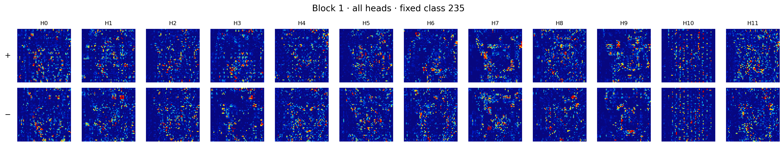
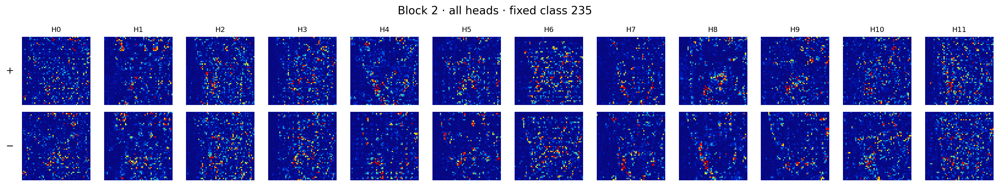


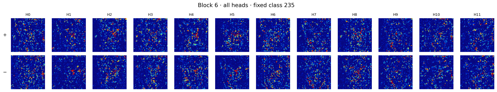
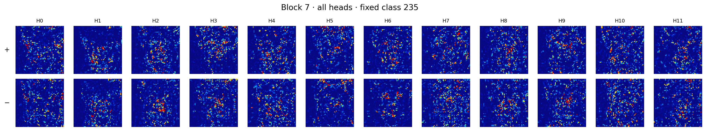
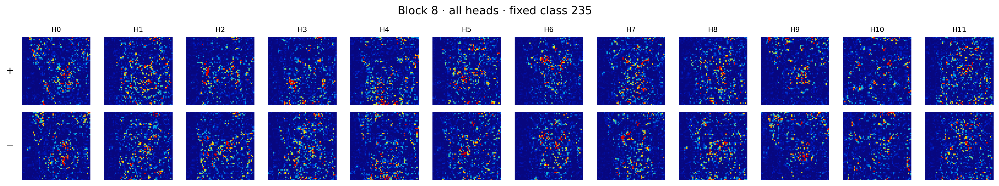
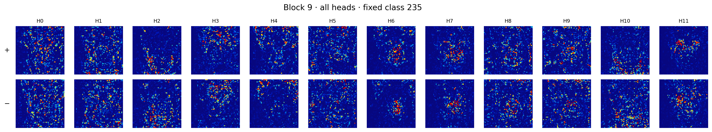

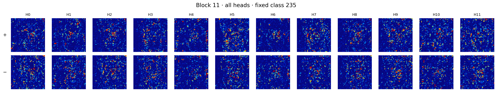